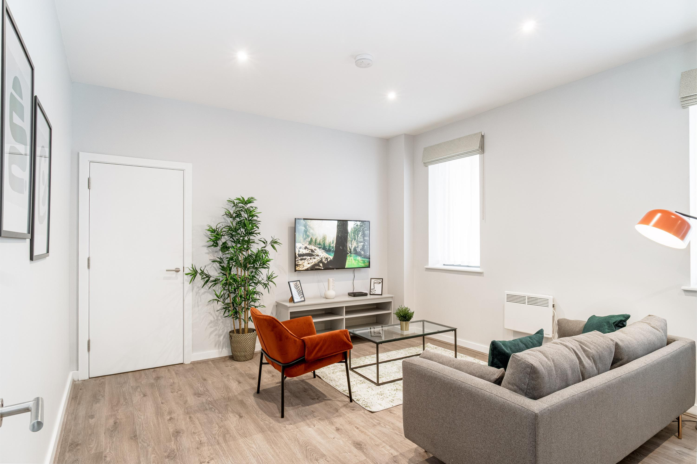

Manchester-based Photography
Real Estate · Architecture · Weddings · Documentary
Real Estate · Architecture · Weddings · Documentary
Salcaptures is a Manchester-based photography practice focused on space, structure, and light. Each frame is treated as documentation rather than decoration — a quiet study of real environments.


